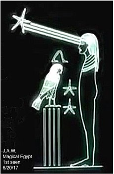

COILFirst “Download” Transmission!?A Message within a Message?
Words from No-where !!??
Star Coil
Structure
fractal
transmission
...telemetry
sculpture
re(as)sembles
remember
bi-lateral
compression
counters
as sinus
positions
lectures
affirm a
recall
of forces
induces
reactance
remission
traction
formation
dilation
relations
rotation
in action
rare-faction
reminds us
IN TIME ....US
in fragments
meant tense
devotions
mid immense

Motion